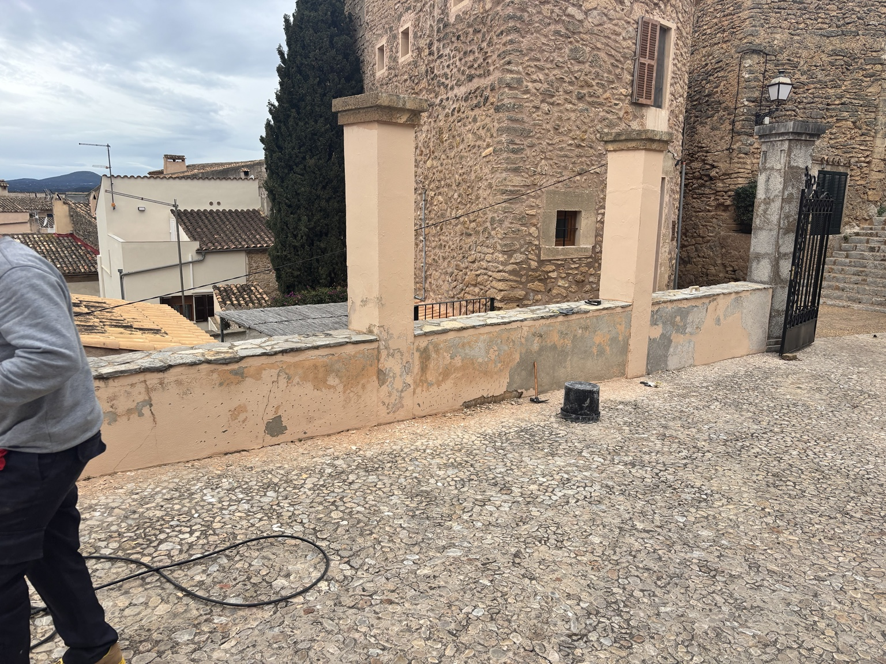
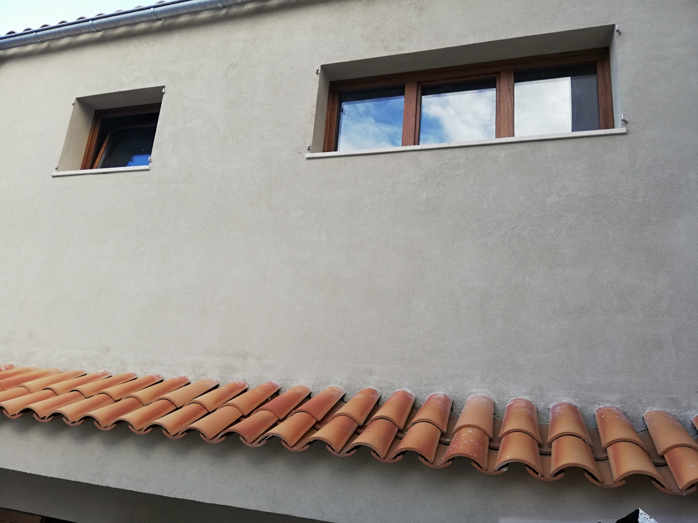
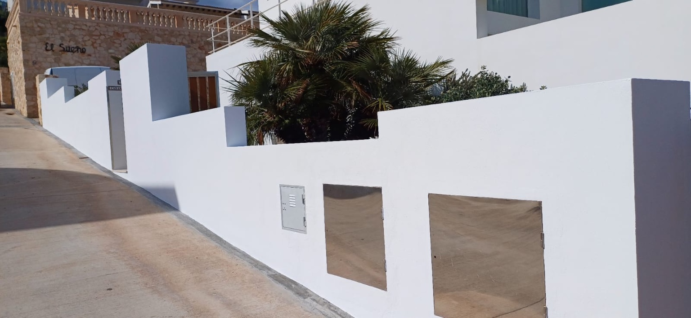
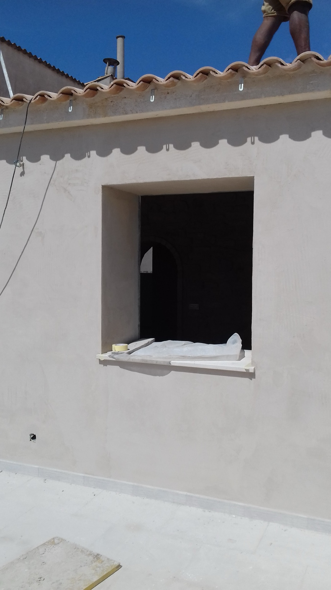

Fachadas · Rehabilitación real
Fachadas y rehabilitación.
Reparación y renovación de fachadas mediante saneado de soportes, tratamiento de fisuras, revocos, pintura e impermeabilización exterior.
← Volver a proyectos
Ejecución real
Primero recuperamos el soporte; después protegemos y terminamos.
Cada fachada requiere diagnóstico previo: fisuras, desprendimientos, humedad, encuentros con cubierta y compatibilidad entre morteros y revestimientos.




Construcción y reforma en Mallorca